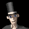
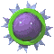
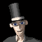
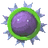
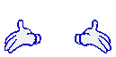
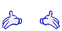

Project 3: Boreal


.gif) 



O v e r v i e w
Boreal was the final project that I worked on at the end of my first year in college. The game is a small demo of a survival game. It has a few core mechanics like an inventory, interaction system and health. There are also animated animals that roam around that I animated myself (although i had to rush most of them except for the fox).

A b o u t _ T h i s _ P r o j e c t
Development Time: 6 WeeksDue Date: 26th May 2024
Final score: 85/100
What Happened
Over the course of the past 9 weeks I have been gradually developing my FMP. I picked a theme and subject and then begun to research and build upon the idea. I begun production and further developed the game until its final state and uploaded it as a WebGL game online. Initially I think the project went okay. I undershot on what I initially thought I could implement in time. Originally I wanted to have a crafting system and possibly some progression but these were not implemented in the final version of the game. Although this is disappointing I still think I Have a substantial game and the features that I managed to include are ones that I am proud of. I would say that this project has been the most challenging so far which is a good thing. I have learnt lots of new techniques, processes and methods especially in the field of 3D games. Originally I felt less confident in 3D game design but now I do feel a great more confident in it. Although the technical challenges I faced in coding the systems for this game were very time consuming I still enjoyed working on them as I was able to resolve them all eventually. Overall the final demo version of the game is stable and has some impressive features but somewhat lacks in traditional gameplay aspects.
Plus, Minus and Improvements
Pluses: The best thing about the project was probably how the end product looks visually. All the assets work well together and my animal models fit okay with the environment. Although I wasn't able to get all the animal models into the game, and the animations look a little bit funky on the bear and deer, the animals are somewhat impressive. The best aspect is definitely the visuals and the particle effects were fun to make and a nice break from 2D effects that i'm used to.
Minuses: One thing that did not go so well with my project would be my schedule. Part way through the project I became mostly disinterested and frustrated with my project. The act of animating the animals was becoming too intensive and laborious. And the idea of the game, although amusing, didn't really give me much creative expression which is normally what keeps me motivated. This means that mid way through the project I was less interested in working and fell behind.
Improvements: I think that the biggest improvement that could be made towards my process would be to focus more on what I want out of the project. If I can keep myself engaged with the project i can make a good game. But this project contained a few very technical elements that slowed me down and wore away at my patience. Although the design process is very fun, I need to pick better subjects originally that will hold my attention for the whole projects duration. And also my planning was not very good.
Conclusion
Looking back over the project, I think the most enjoyable aspect was putting together the environments and doing research into the settings. The visually appealing settings of this game is definitely its strongest element. I would agree as I am proud of how the game looks. But i would say that the demo is more of a vertical slice than a proper game demo. I would have liked to have added more features that would make the game more enjoyable for the player to play. However the game is severely lacking in “stuff” for the player to do. This is probably afforded to the fact that the idea of a survival game is far too extensive in its horizons. There are simply too many features that need to be implemented to make a good survival game as these games rely on the freedom to interact with everything to carry the players immersion. At first when you start playing the demo it feels interactive but then you quickly run out of things to do. In conclusion, I did enjoy this project but I think I enjoyed it a lot less than one of my previous projects. I think this was because the creative license that this game afforded me was a lot less than my other project. This game is a realistic survival game that simulates a woodland settings whereas my last game didn't really have any restriction on creativity which made it far more engaging to work on. I think the biggest flaw was my lack of motivation that was caused by the lack of creative liberty over this project.


 
